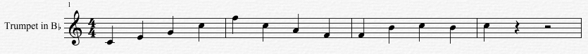
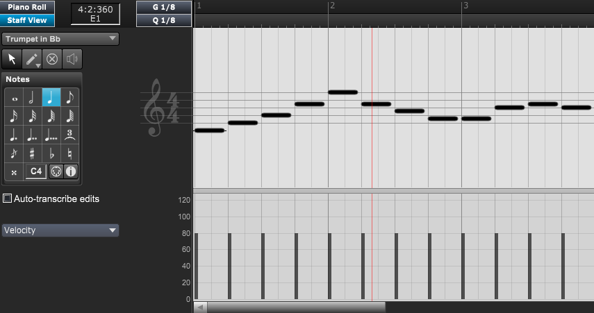

A track is very closely related to a staff or musical instrument. Staves notate the MIDI data contained in tracks into standard notation.
A track on the Score View

The same track in the Track List View
The same track in the Graphic View

Each track is notated on a staff, and any instruments that require multiple staves such as a Grand Staff are still one track. Within each track you can have one to eight voices. A voice is a single melodic or rhythmic line within a track. Some tracks may require more than one voice to notate and playback correctly.
Specifically:
For more information:
See Inserting new tracks to learn how Overture inserts tracks and instruments.
See Changing a track's instrument to learn how Overture changes an existing track's instrument or playback device.
See the Track Inspector section to learn how to set a track's MIDI playback settings and the track's display style.
See Selecting tracks to learn how Overture selects tracks and instruments.
See Displaying a track's plugin to display its plugin.